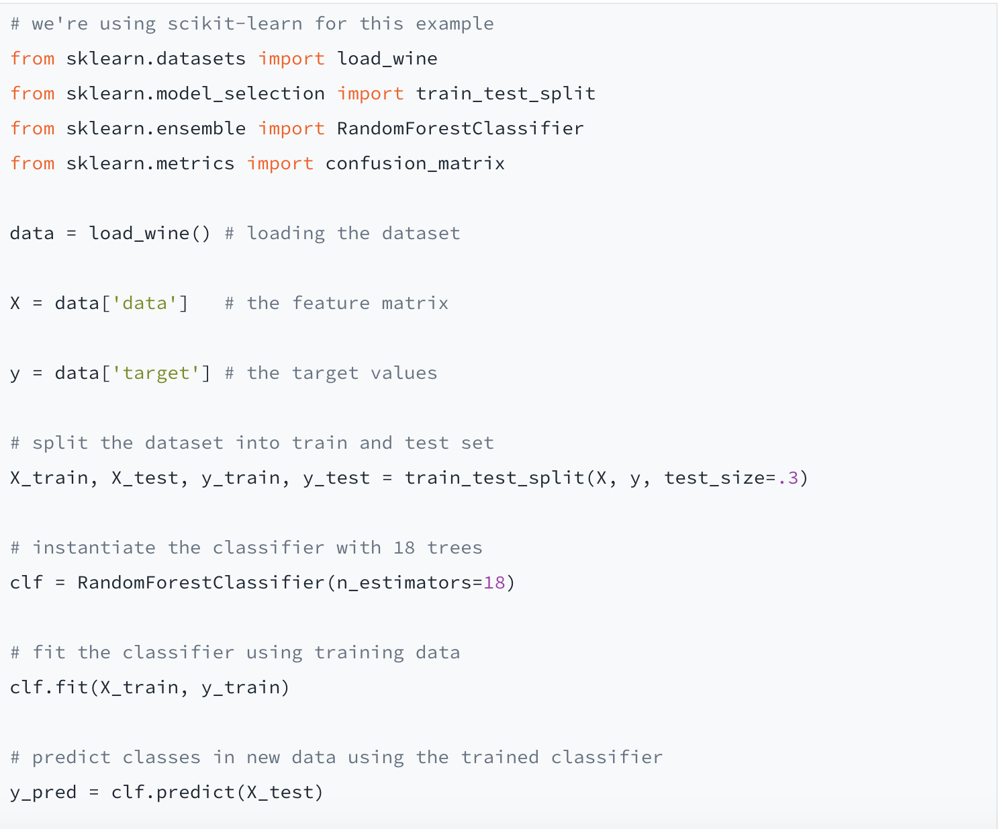

What does it mean for a machine to learn? In a way, machines learn just like humans. They infer patterns from data through a combination of experience and instruction.
In this article, we will give you a sense of the applications for machine learning and explain why Python is a perfect choice for getting started.
We will discuss concepts central to machine learning and walk you through a simple example of a machine-learning algorithm in Python.
What is Machine Learning?
Machine-learning algorithms are mathematical models that predict something—a category, for example, or a continuous value. To arrive at a prediction, a machine-learning model transforms its input using various parameters that it infers from the data.
This is the learning part of the process, and it happens iteratively: After seeing the data, the model makes its guess and is then told, by means of a loss function, how far off it was from the desired output.
In the next iteration, the model tries to improve its predictions by adjusting its parameters, and after a number of iterations, we can assess our trained model using an evaluation function. If we find that the results are satisfactory, then the model is ready to make predictions about new, never-before-seen datapoints.
Why is Python a Good Fit for Machine Learning?
In recent years Python has become the go-to programming language for machine-learning applications. It stands out for its readability — it’s easy to learn, making it accessible even to programming newbies — and its portability, since it runs on all operating systems.
But Python‘s main selling point as the machine-learning framework of choice is its vast ecosystem. Most machine-learning algorithms are implemented directly in Python. What’s more, the community actively provides support to its own members on question-and-answer platforms like StackOverflow.
This means that for virtually any problem you’re likely to encounter in the beginning, you can find a solution online. Check out our Introduction to Python online class to get started with this powerful language.
Some Core Concepts of Machine Learning
In this section, we cover some basic concepts that provide useful context when diving into machine learning with Python.
Supervised vs. Unsupervised
Even the most sophisticated model is useless if you lack the data to train it. In a supervised problem, the data must be labeled: During training, you provide a target variable for every datapoint. Labeled data is expensive because it usually requires humans to do the labeling. In contrast, unsupervised algorithms can handle unlabeled data.
They are designed to discern underlying regularities in the input on their own. Finally, reinforcement learning lies somewhere between supervised and unsupervised learning.
As in supervised learning, the goal is specified in advance, but the model devises a strategy to reach it and maximize its reward in a relatively unsupervised fashion. Reinforcement strategies are often used to teach computers to play games.
Classification vs. Regression
If we use a machine-learning application to predict categories (say, images of ducks vs. images of geese), we’re solving a classification problem. Classifiers are not confined to binary problems; they work with multiclass distinctions, too.
On the other hand, we use regression models to predict continuous values like house prices. Under the hood, both classification and regression algorithms work with continuous values, but in a classification algorithm they’re used to determine class probabilities.
BOverfitting vs. Underfitting
To understand the concepts of over- and underfitting, we need to acquaint ourselves with the notions of bias and variance. Bias describes the rigidity of the model, while variance refers to its volatility. A model with too high a bias can’t effectively learn from the data, leading to an underfit model.
An overfit model, on the other hand, has a high variance and is overly tuned to the training data. When seeing new data, an overfit model typically performs very poorly, because it has not learned the right level of abstraction from its input. When designing a model, we want to balance the effects of both phenomena. This is known as the bias-variance tradeoff.
Examples of Machine Learning Algorithms
Here are a few examples of specific tasks that machine learning in Python can be used for.
Logistic Regression
The logistic regression algorithm is based on a centuries-old statistical technique and is used for simple binary classifications. It also deserves an award for the machine-learning technique with the most misleading name, since it describes not a regression but a classification.
Decision Trees
In its most basic form, a decision-tree model learns to split data along features iteratively in order to arrive at a class prediction. More sophisticated tree-based algorithms combine hundreds of trees to achieve accurate predictions. This is known as ensemble learning.
k-means Clustering
A clustering algorithm is an example of unsupervised learning in action. It iteratively assigns unlabeled input data to a number of groups (clusters) and tries to maximize homogeneity within each cluster as well as distinctiveness among clusters. Before running the algorithm, the user must define the number of groups (specified by the hyperparameter k).
Neural Networks
In deep learning, data is run through complex graph-based models called neural networks. These days, the best models for tasks involving unstructured data (such as pictures or natural language) are based on neural networks. Training an algorithm like this requires lots of data and computing resources capable of doing millions of computations in parallel (such as GPUs).
A Python Machine-Learning Example
In this example, we’ll use a random forest classifier (an ensemble method based on decision trees) to predict wine types. Our feature vectors consist of values for 13 chemical attributes (such as alcohol content or acidity), while the output value is one of three different classes representing the type of grape.
Confusion matrices, also known as error matrices, are handy devices for assessing the performance of a classifier. The x-axis shows the actual label, and the y-axis shows the predicted one. The numbers on the diagonal indicate which samples were classified correctly. As we see above on the middle line of results, one member each of the first and third classes were incorrectly grouped into the second class. This gives us an accuracy (the percentage of correctly classified samples) of 96 percent. Finally, we printed the three top features used by the model as predictors for classifying the samples.
Now that we’ve walked through a simple example of machine learning in Python, let’s have a look at a few popular Python frameworks for machine learning.
Python Machine-Learning Frameworks
scikit-learn
You might have noticed that all the functions we used in our wine classification example came from the same library. In fact, when doing machine learning with Python, there is almost no avoiding scikit-learn, commonly abbreviated as sklearn. The framework comes with implementations of the most popular machine-learning algorithms, as well as plenty of helper functions.
TensorFlow
Google’s deep learning library TensorFlow has quickly become the most popular framework for building neural nets. The latest update integrates the modular interface Keras as a high-level API, making it more accessible for beginners.
Matplotlib
A graph says more than a thousand code snippets. Humans are highly visual, and plotting the results of your model, or a feature distribution from your dataset, will gain you new insights. Matplotlib, Python’s default plotting library, provides templates for all kinds of graphs and has great customizability.
Summary
While often used as a buzzword, the term “machine learning” is shorthand for an entire world of models and applications. In this article, we provided an overview over its most common concepts. In order to get an understanding of machine learning in practice, we suggest you choose a problem that interests you, and then you can start working on your own machine learning projects in Python.